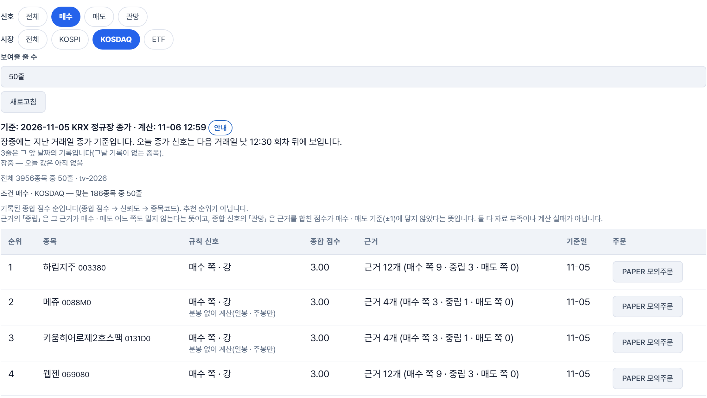
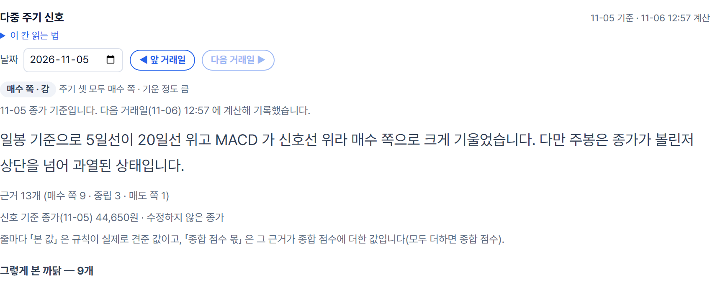
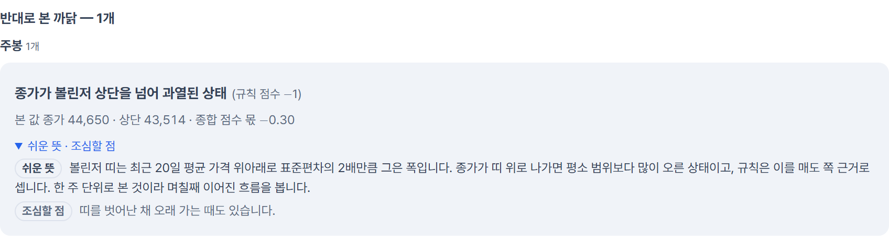
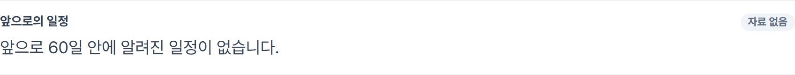
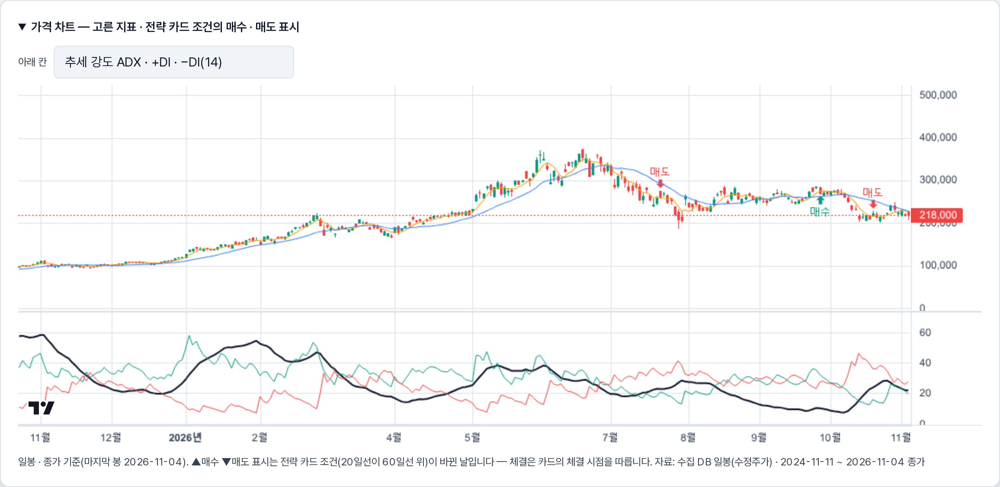

3차 프로젝트 발표
이동원 → 신장환 → 오준영 → 강민석 순서로 담당 슬라이드와 시연 영상을 이어서 보여 드립니다. 슬라이드 32장 · 시연 영상 8편 · 사람이 바뀌는 곳에 구분 장 · 맨 끝에 한계와 이어갈 길(강민석 발표)
데이터 · 신호 근거 · 대사
QURIOUS / 데이터 · 신호 근거 · 대사
데이터 수집, 신호 근거, 같은 신호를 다시 돌려 맞춰 보는 대사.
잘하는 곳에서 배우고 비어 있는 곳을 채웠습니다. 못 한 것은 못 했다고 적었습니다.
배경
2차 때는 어떤 자산을 얼마나 담을지를 다뤘습니다.
3차 과제는 나만의 투자 인디케이터를 만들고 성과를 검증하는 것입니다. 자기 규칙을 지표로 만들고, TradingView와 QuantConnect LEAN으로 다시 검증하고, 증권사 모의계좌까지 잇습니다.
| 내 규칙을 전략 카드와 지표로 만든다 | 신장환 님 |
| Pine으로 내보내 TradingView와 맞춰 본다 밑바탕인 데이터 수집과 신호 근거도 여기서 | 이동원 |
| 같은 규칙을 LEAN으로 다시 돌려 맞춘다 | 강민석 님 |
| 증권사 모의계좌에 주문을 잇는다 | 오준영 님 |
문제 정의
10월 27일에 모의투자를 직접 써 본 사용자가 세 가지를 짚었습니다.
시그널이 최신 주가 기준인지 화면에서 확인할 수 없다.
매수·매도·관망의 근거가 안 보여서, 왜 사고파는지 설명할 수 없다.
얼마나 오르내릴 수 있는지 범위와 위험 설명이 없다.
코드를 확인해 보니 맞았습니다. 근거 문장은 응답에 이미 있는데 카드가 보여 주지 않았고, 기준일은 작은 회색 글씨로만 나왔습니다. 밖의 자료도 같은 방향입니다. 자본시장연구원은 경험이 부족한 투자자일수록 눈에 띄고 접근하기 쉬운 정보에 더 기댄다고 봤고, 30·40대 투자자 1,005명은 증권사 보고서를 덜 읽는 까닭으로 「길어서」(39.6%)를 가장 많이 꼽았습니다.
시장 조사
퀀터스와 젠포트, 인텔리퀀트, Composer는 노코드나 AI로 전략을 만들고 백테스트한 뒤 주문까지 잇습니다.
TradingView는 Pine으로 차트에서 바로 규칙을 시험하고, 스스로 1억 명의 트레이더가 쓴다고 소개합니다. QuantConnect LEAN은 같은 규칙을 독립 엔진에서 재현합니다.
| 노코드 | AI 지원 | 백테스트 | 사용자 Pine | Python · LEAN | 주문 연동 | |
|---|---|---|---|---|---|---|
| 퀀터스 | ● | ● | ● | — | — | ● |
| 젠포트 | ● | △ | ● | — | — | ● |
| 인텔리퀀트 | ● | ● | ● | — | — | ● |
| Composer | ● | ● | ● | — | — | ● |
| TradingView | △ | △ | ● | ● | — | △ |
| QuantConnect | — | △ | ● | — | ● | ● |
| Portfolio Visualizer | △ | △ | ● | — | — | — |
| Portfolio123 | ● | ● | ● | — | △ | ● |
신호를 보여 주는 방식에서 배운 것
TradingView는 알림을 봉이 닫힌 뒤 한 번만 보내라고 권합니다. Freqtrade와 QuantConnect LEAN도 봉이 완성될 때 계산합니다.
Simply Wall St는 「업종·시장보다 주가가 출렁이는가?」 같은 질문 하나에 짧은 판정을 달고, 그 밑에 업종과 시장 평균을 나란히 둡니다.
Finviz는 무료 시세에 「1분 지연」 표시를 늘 붙여 둡니다.
그래도 비어 있는 곳
TradingView는 주문을 브로커 에뮬레이터로 시뮬레이션합니다. 차트에 표시만 하는 indicator()는 Strategy Report에 거래가 나오지 않는다고 도움말에 적혀 있습니다.
QuantConnect는 실거래와 표본 외 백테스트를 겹쳐 보고, 차이의 원인을 데이터와 모델링, 증권사로 나눕니다.
같은 규칙을 여러 환경에서 돌려 보고 차이의 이유까지 한 화면에서 설명해 주는 곳은, 우리가 읽은 공개 자료에서는 찾지 못했습니다. 다만 로그인과 유료 기능은 못 봐서 검증 전 가설입니다.
그런데 비어 있는 곳이 있었습니다
Investing.com은 「Strong Buy」를, Stockopedia는 0에서 100 사이 숫자 하나를 줍니다. 지표를 합치고 나면 어떤 근거가 켜졌는지 보이지 않고, Morningstar는 매수와 매도를 검토할 가격대까지 정해 줍니다.
그렇다고 설명만 붙이면 풀리지도 않습니다. Bansal 연구진의 실험에서는 AI가 설명을 붙이자 AI가 틀렸을 때도 사람들이 더 따랐고, 반대 답까지 같이 설명했을 때는 덜 따랐습니다. 「과거 수익은 미래를 보장하지 않는다」 같은 고지문도 투자 의향을 바꾸지 못했습니다.
솔직히 우리 신호도 규칙 점수를 더하는 방식이라 계산은 이 서비스들과 같은 계열입니다. 다른 점은 오른쪽입니다.
신호 옆에 반대로 본 까닭을 같은 크기로, 고지문 한 줄 대신 무엇이 틀릴 수 있는지를 칸마다, 목표가와 손절가는 사용자가 정합니다.
우리가 만든 것 · 한 일 한눈에
3차에서 맡은 것은 수집, 신호 근거, 같은 신호를 다시 돌려 맞추는 대사, 그리고 주담당인 TradingView와 Pine입니다.
수집 · 신호는 배울 점(7장)에, 일지 · 대사 · TradingView는 같은 규칙이 도구마다 달라지는 빈 곳(8장)에, 종목 근거는 근거가 묻히고 설명이 오히려 따르게 하는 빈 곳(9장)에 답한 결과입니다. 오른쪽 표가 뒤에서 한 장씩 설명할 내용이고, 숫자는 저장소에서 직접 센 값입니다.
팀원이 만든 것은 따로 구분했습니다. LEAN 체결 시점 구현은 강민석 님, 근거 문장은 신장환 님, 증권사 주문은 오준영 님입니다. 저는 그 사이를 맞춰 보는 쪽이었습니다.
| 수집 | 매일 12:30 러너 21 → 28단계 (제가 6개) | 11장 구조도 |
| 신호 | 기록 종목 401 → 약 3,950 · 낡은 일봉 가드 | 12 ~ 14장 |
| 일지 | 규칙 · 코드 지문으로 판을 잠그는 그림자 일지 | 15 ~ 16장 |
| 대사 | 체결 시점 어긋남의 원인 분석 (구현은 강민석 님) | 강민석 님 파트 |
| TradingView | Pine 생성기 · 웹훅 받는 쪽 검증 | 18 ~ 19장 |
| 시험 | 새 시험 파일 149개 중 91개 | 17장 |
우리가 만든 것 · 한눈에 보는 구조
우리가 만든 것 ① 신호 · 기록 넓히기
우리가 만든 것 ① 신호 · 순위 화면

1234signal_explain은 신장환 님입니다. 순서는 추천이 아니라 기록된 종합 점수 순이라고 화면에 적혀 있습니다.우리가 만든 것 ① 신호 · 종목 근거

123
4signal_explain이 만듭니다.
우리가 만든 것 ② 그림자 일지
우리가 만든 것 ② 겪은 문제: 일지에 생긴 판 2
get_quant_indicators 본문에 신선도 코드를 넣어 지문이 9b646702ddac → 8e2a5e2b99e5. 일지가 새 판을 자동 등록한 것입니다.get_candles 래퍼로 옮김 · 판 2 삭제(DB 한 트랜잭션 + 원장 4파일) · 설명 메모 2건 · 시험 3건. 일지 코드에 지우는 함수는 없고, 삭제는 제가 직접 한 번 한 예외 작업입니다.status도 두 규칙 모두 판 1 · 지문 같음입니다.우리가 만든 것 · 시험이 지키는 범위
| Windows 환경 34 | KIS 복구 30 · proc_stats 4 — 11-05 에 변경 전 코드도 똑같이 실패 |
| 11-09 에 고침 3 | no_yahoo 2 · pipeline_profile 1 |
우리가 만든 것 ③ TradingView · 카드에서 Pine 코드로
| 1 | 카드 지문 카드 전체 → 2번 줄 |
| 2 | 기간 entry · exit 의 20 · 60 → 11 · 12번 줄 |
| 3 | 수량 max_position_pct 30 · risk_pct 1 → 16 · 17번 줄 |
| 4 | 손절 atr_period 14 · atr_mult 2 → 18 · 19번 줄, 손절선은 45번 줄 |
| 5 | 익절 take_rr 2 → 20번 줄, 익절선은 46번 줄 (손절 거리의 2배) |
| 6 | 수수료 · 슬리피지 · 시작 자본 카드에 없고 생성할 때 넣은 값 → 6번 줄 (슬리피지 10bp 는 1틱, 실효 14.3bp). 같은 줄의 process_orders_on_close 는 카드의 체결 시점(entry_mode)에서 옴 |
파랑 = 카드 칸 · 호박 = 카드에 없고 생성할 때 넣은 값. 시험 통과는 카드의 숫자와 코드의 숫자가 같다는 뜻입니다.
우리가 만든 것 ③ TradingView · 알림 받는 쪽
아직 못 한 것 실제 TradingView 서버가 보낸 알림으로 받아 본 기록은 없습니다. 공개 HTTPS 주소가 있어야 하는데(설계서 7절 물음 8 · 8절), 지금까지는 흉내 요청과 일회용 DB 시험뿐입니다. 시연 계정으로 본 화면의 수신 신호 이력도 0건입니다(계정별 목록).
전략 카드 · 성과 검증
신장환 · 기본 인디케이터 전략 · 커스텀 인디케이터
전체 그림
파란 칸 제가 만든 것 · 회색 점선 칸 팀원이 만든 것
전략 카드
화면 · 커스텀 인디케이터

12실제 화면 — 기본 인디케이터 전략 → 가격 차트(삼성전자 · 2026-11-04 종가 기준)
같은 값 · 같은 판단인지
기준 전략
정리
배분 · 리밸런싱 · 실행
QURIOUS / 자산배분 · 리밸런싱 · 증권사 연동
사용자가 확인한 배분과 전략을
모의 실행·위험관리·결과 확인으로 연결합니다.
01 / 자산배분과 리밸런싱
성향별 기준 배분에 네 가지 모델을 더하고, 자료 기준일과 입력 조건을 함께 남깁니다.
자산군별 위험 기여를
균등하게 배분
비중 제약 안에서
분산을 낮추는 조합
기준 비중에 상대 전망과
신뢰도를 반영
추세 × 변동성에 따라
네 국면의 목표 계산
02 / 전략 주문과 위험관리
PAPER·QUANT 가상 장부와 KIS 모의계좌의 현금·보유·주문을 구분합니다.
최신 확정 자료
계좌·전략 판·귀속 보유
손실 한도·비상 정지
기존 주문 번호로 조회
접수와 체결 상태 구분
같은 요청의 중복 방지
판단 기본 600초
체결 추적 120초
heartbeat 60초
QUANT 판 2: 조정 사건을 감지해 보류하면 자동 손절·익절도 실행되지 않습니다.
수량·평단·손절·익절선 자동 교정과 보류 해제는 미지원입니다. 서버 중단·주기 사이 급변·체결 보장도 별도 한계입니다.
03 / 실제 KIS 모의 검증
2026.11.06 · 하나금융지주 · S-Oil · 삼성에스디에스 각 10주, KIS 모의계좌 시험
매수 / 3건 FILLED
총 30주 체결
홈페이지 시험 진단의 추천 목록 사용
사용자의 실제 성향과 별도인 기능 검증용 선택매도 / 3건 FILLED
총 30주 체결
09:40:32~09:43:41 매수·매도 확인
앱 주문 기록과 증권사 체결 결과 대조세 종목 모두 전량 매도
삼성전자 · 위험 설정 유지
여섯 주문 모두 완료
11/3에는 취소 확정 → 잔량 1주 재주문도 별도 검증했습니다.
가상 자금의 모의 주문 기능 검증입니다. 자연 전략 주문·수익성은 입증하지 않습니다.
04 / 검증과 발견한 오류
주문 식별자로 발송 권한을 선점하고, 실제 DB에서 동시 호출을 검증했습니다.
최초 시험에서 주문 자체의 중복은 없었습니다. 수정 후 새 모의 주문은 만들지 않았습니다.
05 / 운영과 인수인계
LEAN 대사 · 모의투자
여기서부터는 못 한 것입니다
신장환 님이 400종목, 138일에 걸친 5만 줄이 넘는 신호를 5거래일 뒤 실제 수익과 맞춰 봤습니다.
매수 신호의 적중률은 48.9에서 50.1%였습니다. 아무 날이나 뽑아도 오르는 비율 51.3%와 비슷하거나 낮았고, 신뢰도가 높다고 적중률이 오르지도 않았습니다.
그래서 저희 신호는 수익을 맞히는 신호가 아니라 「이 규칙이 켜졌다」는 기록이라고 말씀드립니다.
범위는 60분 · 일 · 주 신호, 5거래일 하나, 비용 제외입니다. 자동매매의 이동평균 교차 규칙은 이 대조에 없고, 같은 규칙은 기준 전략 110개 시도로 백테스트했습니다(합격 0).
그 밖에 못 한 것과, 이어갈 길
전진 기록은 10행이고 대사도 ma_cross 한 조건에서만 맞춰 봤습니다.
→ 기록이 쌓이면 구간별로 나눠 보이고, 카드 비중을 LEAN에 넘겨 다른 전략도 맞춰 봅니다.
생성기가 낸 Pine 코드 두 판을 편집기에서 한 번 컴파일했을 뿐입니다. 거래 목록 CSV 비교와 실제 알림 수신은 못 했습니다.
→ 공개 HTTPS 주소가 준비되면 알림을 실제로 한 번 받아 확인합니다.
가상 체결이라 시장 충격, 거절, 지연은 재지 않았고 슬리피지는 10bp로 고정했습니다. 증권사 일봉이 몇 시에 확정되는지도 아직 단정하지 못합니다.
→ 공식 종가와 맞춰 본 뒤에 정합니다. 슬리피지 민감도는 이어갈 길입니다.
일손실, 종목 비중, 하루 주문 수 한도와 비상 정지는 구현했습니다. 하지만 급락일을 가정한 스트레스 점검은 하지 않았고, 이 전략이 실패한다면 무엇 때문일지도 한 편으로 쓰지 못했습니다.
→ 스트레스 시나리오 표는 제안 단계이며, 이 표부터 정합니다.